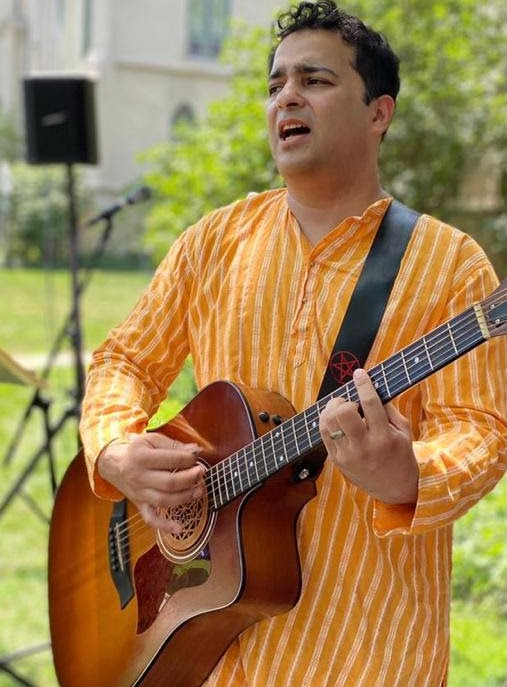
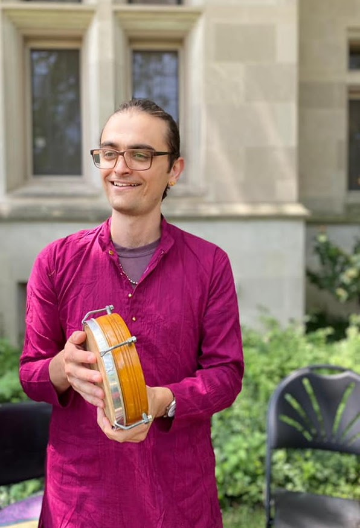

Subhajit Sengupta (Subho)
Subho (lead vocal, khol, dubki) grew up in a suburban town named Bhadreswar (near Kolkata), West Bengal, India. He started learning music from his mother and sisters. Next, he had taken extensive lessons on Rabindra Sangeet from late Mrs. Chhaya Chatterjee. After that, he studied various forms of Indian music under Rishav Supriya. In recent times, he has been taking lessons from Vidushi Anjana Nath. At present, he is learning Bengali modern music under the guidance of Haimanti Shukla. In his musical journey so far, he studied many genres of Indian music including Hindustani Classical music, Rabindra Sangeet, Nazrul Geeti, Various forms of Indian Folk, Ghazals, Bhajans. He also actively composes his own songs with his good friends, Debajit Goswami and Suvankar Das Gupta.
Swarnali Banerjee
Swarnali Banerjee (Vocal, Manjira) grew up in Kolkata, West Bengal, India learning Rabindrasangeet (songs by Tagore) from her father from the age of 3. She then started her extensive vocal training at the tender age of 5 under the tutelage of Pandit Ajoy Chakraborty, a leading classical vocalist, Guru and scion of the Kasur-Patiala Gharana of Hindustani Classical Music. Swarnali went on to complete her Sangeet Visharad with first class distinction. She has had training in Nazrulgeeti, Raag Pradhan - semi classical music, Thumris and Classical Bhajans. She came to the US in 2010 to pursue a PhD in statistics and is presently an assistant professor of statistics in Chicago. She found kindred souls in members of Ochin Pakhi and is grateful to continue her musical journey with them.
Lucia Thomas
Lucia Thomas is a violinist, oud, sitar, and banjo player, arts organizer and writer who plays in many groups professionally around the country. Her range extends from Appalachian old time to Peruvian waltzes, with Arabic classical, Balkan, and many traditional folk styles in between. After graduating in western classical violin performance from the Lamont School of Music, Lucia began touring the world, seeking traditional music from any corner her fiddle would take her. She is now the artistic director, violinist and producer of the world music string quartet called the Chicago Folklore Ensemble, which is a group that celebrates immigrants in the United States by dramatically performing their stories and songs with string quartet and storyteller. Throughout her work, Lucia aims to bring together disparate groups of people by sharing real stories, beautiful music, and love of life!
Molly Greening
Molly Greening (cello) grew up in the north suburbs of Chicago and was initially drawn to the cello by a large purple dinosaur. Enraptured while watching the instrument on the children's television show Barney and Friends, Molly began studying Western classical music at the Music Institute of Chicago when she was 5 years old. Thanks to one of her music teachers (Clark Chaffee) who introduced her to blues improvisation, and the Suzuki method that taught her to play by ear, Molly's musical journey broadened beyond the Western classical scope. This led her to travel the world, pick up the er hu, study the Baul/Fakir singing traditions of West Bengal, learn Middle Eastern maqam, perform live music for belly dance and folk dance classes, and play in various rock/folk bands in the Midwest. Currently she is a researcher and a PhD student at Loyola University Chicago studying ethics and theology.
Mehtab Kirtan
Mehtab Kirtan (Khol, Tabla) is an innovative musician and inspiring teacher in Chicago. He actively records and performs with original projects Bassel & the Supernaturals, Gramps The Vamp, Abud: A Band, and Here & Now. He couldn't be more excited to rock khol with Ochin Pakhi, in the name of liberating all hearts & souls.
In addition to his musical work, Mehtab Kirtan teaches Kundalini Yoga & Meditation classes at Urban Yoga Chicago, Centered-Studios, and Heaven Meets Earth Yoga.
Sam Hyson
Sam Hyson (accordion, violin, vocal) plays many styles of Eastern European, Latin American, and Middle Eastern music. He is co-founder of the Chicago Folklore Ensemble, which features master musicians of many different ethnic backgrounds. In addition, he performs Mexican music with Cielito Lindo Family Folk Music, Jewish and Arabic music with Salaam-Shalom Music Project, Persian music with Shalizar Ensemble, and a wide variety of styles with Compass Rose World Music Violin Duo.
Tzippy Rhodes
Tzippy Rhodes (flute, mandira, vocal) Tzippy brings her passion for traditional music of South Eastern Europe shared through multiple instruments and singing. She is the co-founder of the Herbal Remedies musical group where she performs original music inspired by diverse folk traditions and connection to nature.
Sayak Mitter
Sayak Mitter (vocal and guitar) grew up in Kolkata, India and started learning music from his mother at a very early age. Later he became a student of Indian Classical Music under the tutelage of Namita Chattopadhyay at Saurabh Music Academy in Kolkata. Later, he picked up the guitar while in Chennai, India and then in Florida. While involved in other musical projects as well such as The Mutineers of Al, Sayak finds Ochin Pakhi to be a unique opportunity to learn and collaborate with talented musicians and explore the philosophical depths of traditional Bangla Baul music.

Nathan
Nathan Torrence (tablas, hand drums, vocal) was trained on woodwinds from a young age, and began exploring both world music and percussion in 2005. Following an ever-growing attraction, he studied healing music and instrument making with Ben Hume in NYC (2009), and traditional trance drumming in Morocco (2013, 2014). Both of these study experiences had a lasting impact – Nathan believes that music has a tremendous power to affect and integrate the body, mind, and spirit, bring rest and inspiration to the heart, and create a shared, loving experience between people.

Past Member: Radia Ali
Radia Ali (dance) also known as Noori, is a multi- disciplinary perfoming artist, poet and fire dancer. She performs an array of styles from South Asian classical & folk, belly dance, flamenco, samba to bachata, salsa, and burlesque. She uses props such as silk veils, Fire fans and swords to tell stories across cultures with her movements.
Growing up in different countries, Radia was able to experience dance, music and cultural practices both in Asia and Europe. She uses these experiences to create fusion choreography and movement experiences.
Radia is currently an organizer at the Chicago Full Moon Jam, performs with the Bengali Folk group Ochin Pakhi, with Egyptian trance indie artist NAXÖ, and with the samba group Planeta Azul. She teaches fire performance, as well as Bollywood and other fusion movement classes.
Past Member: Max Bessesen
Max Bessesen (Saxophone, flute) is a performer, composer, and educator based in Chicago, IL. His skills as a saxophonist and woodwind doubler have taken him across five continents and earned him awards from organizations including Downbeat Magazine, and the Frank Huntington Beebe Fund. Max has performed and recorded with artists as diverse as Dayna Stephens, Simone Shaheen, and Isaac Slade (of The Fray). He performs with a variety Chicago ensembles, leads his own group, and is one part of the collective quartet Echoes. Max holds degrees in Jazz Saxophone Performance and Law & Society from Oberlin where he studied with Gary Bartz, Eddie Henderson, and Billy Hart.
Guest Member: Soumyajyoti Ghosh
Soumyajyoti Ghosh (bansoori, khol) started his musical quest at the age of only twelve years under the able guidance of Sri Sudip Chatterjee, a senior staff artist of the All India Radio. In the course of his melodious journey, Soumyajyoti got the privilege of the guidance of many acclaimed artists and musicians such as Pt. Debaprasad Banerjee, Sri Debapratim Roy and Dr. Rajib Chakraborty. Finally, his musical horizon got illuminated by the celestial light of his gurus 'Pt. Ronu Majumdar', the flute Maestro of the famous ‘Maihar' Gharana, and Pt. Ajoy Chakraborti. Their affectionate blessings shower on Soumyajyoti abundantly till date and under their tutelage, Soumyajyoti continues to pursue his tireless musical quest. Soumyajyoti was selected in the ‘All India Radio Talent Contest' at the age of fifteen and he has upgraded himself as a B-high artist of the All India Radio. Since then, Soumyajyoti has been performing and winning acclaim from varied audiences and fellow musicians both nationally and internationally. He has performed in the ‘Bird's eye Jazz Club' in Switzerland and ‘Rijeka Jazz Festival 'in Croatia. He has given solo performances in France, Australia, Japan, South Africa, West Indies amongst others. He has also shared the stage with eminent artistes from all over the world like, Pt. Birju Maharaj, Pt. Chitresh Das, Ust. Ghulam Ali, Pt. Debashish Bhattacharya, Pt. Bikram Ghosh, Kavita Krishnamurthy, Koushiki Chakraborty, Rashid Khan and many others. As a musician, Soumyajyoti has a unique mix of traditional and innovative skills. He has created new age music, been in a Fusion rock band, performed with international artists on varied musical styles, as well as played all kinds Indian music including traditional classical music. In addition to his performances, Soumyajyoti also plays the role of a teacher to several talented students in India and around the world.